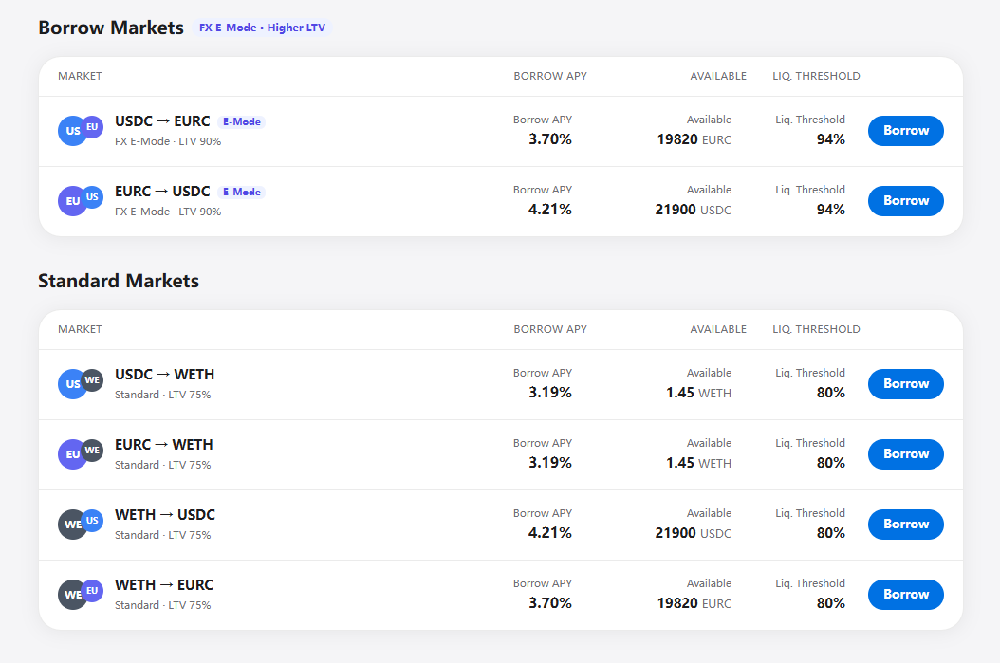
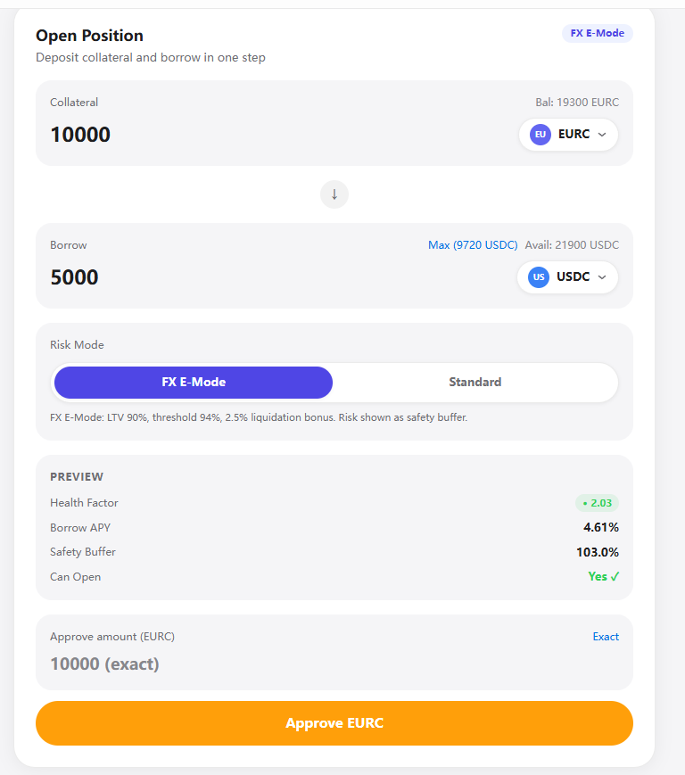
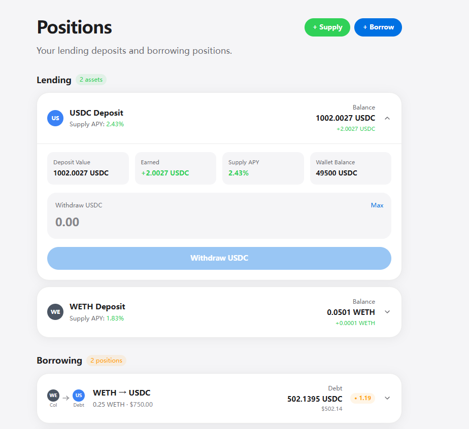

Deposit an asset, borrow another against it, get liquidated if your health factor drops below 1 — the familiar shape of a lending market. What we add: risk parameters resolve per currency pair, not per asset. A USDC ↔ EURC loan is priced off EUR/USD volatility; anything touching WETH keeps conservative Standard parameters. One pool, one liquidation engine, two parameter sources.
| Deployed on | Arc Testnet · chainId 5042002 |
| Core contract | LendingPool.sol · 1,091 SLOC |
| Assets live | USDC · EURC · WETH |
USDC is native and regulated-first on Arc, with EURC alongside it as a first-class asset. That makes Arc the chain where credit between two Circle currencies is a natural product, not a bridged workaround.
A EUR/USD pair moves far less than a crypto pair, so it safely supports a much higher LTV. Existing markets don't capture that — and the mechanism generalises to further pairs.
Market discovery, pricing and risk checks are all read-only calls — built for autonomous strategies, not just human clicks.
USDC ↔ EURC borrowing at 90% LTV. Liquidation parameters are computed from EUR/USD volatility by the risk engine, and validated against real positions on Arc Testnet across repeated runs. Every risk read is a view call, so an AI agent can drive the whole loop without simulating the protocol.
That lower volatility is real collateral headroom — it supports a materially higher LTV, if the protocol actually measures it.
| Annualised vol | Typical |
|---|---|
| ETH / USD | 60 – 80% |
| BTC / USD | 40 – 60% |
| EUR / USD | 7 – 11% |
Roughly 6–8× less volatile than what a lending market normally underwrites. Charging a EUR/USD loan the same collateral cost as an ETH loan leaves most of that headroom unused.
| Calm regime | 7–8% |
| Stress (2022) | ~11% |
| Implied vol 2022 | 10.6% |
| Implied vol 2024 | 7.3% |
| Worst single day | > 2% |
Lower than crypto, but a 2% gap day still happens. The higher LTV has to be derived from these numbers, not simply set as high as the category allows.
So we made the currency pair a first-class risk object. A registered pair gets parameters computed from its own volatility, and everything else falls back to Standard. USDC ↔ EURC is the first entry — additional currency pairs plug into the same mechanism as configuration, not new risk code.
Risk parameters resolve per currency pair, not per asset. Same collateral, different rules, depending on what you borrow.
Sourced from per-asset AssetConfig. Covers WETH collateral,
shorts, and any pair without a registered FX category.
| Max LTV | 75% |
| Liquidation threshold | 80% |
| Liquidation bonus | 5.0 – 7.5% |
| Reserve factor | 10% |
Sourced from FxCategory, keyed by the currency pair.
Each value is computed from that pair's own measured volatility.
| Max LTV | 90% |
| Liquidation threshold | 94% |
| Liquidation bonus | 2.5% |
| Reserve factor | 10% |
90% LTV on FX pairs vs 75% standard — 1.2× more borrowing power, because the risk genuinely is lower.
94%, not 98%. We give up headline LTV to keep a liquidation window that actually works — next slide.
LT and bonus are not tuned by feel. Each is bounded by a closed-form condition — and 98% violates all three.
Between "liquidatable" and "already insolvent" there is 4 basis points of price. A liquidator has no profitable window; the position goes straight to bad debt. And 2% bonus is already at the death-spiral bound — every liquidation pushes HF further down.
A 3.65% price band in which liquidation is profitable and the protocol stays solvent. That absorbs a 2%+ FX gap move with room left over, and the 6.38% collateral buffer covers roughly nine stress-day sigmas.
The trade is deliberate: 4 points of headline LTV bought a 90× wider survival window.
Full derivation in docs/architecture.md.
A fixed 50% close factor leaves dust positions that no one will ever liquidate. Ours switches to full close before the position can cross into insolvency.
| Health factor | Close factor | Rationale |
|---|---|---|
| HF ≥ 1.0 | none | Not liquidatable |
| 1.0 > HF ≥ threshold | 50% | Partial — minimum force needed to restore health |
| HF < threshold | 100% | Full close before the healthy window runs out |
| Standard threshold | HF 0.980 |
| FX E-Mode threshold | HF 0.983 |
The FX threshold is higher on purpose: a narrower window means the switch to full close has to fire earlier.
Every position is keyed by (owner, collateral, debt).
One pair going bad cannot touch the borrower's other positions —
contagion is bounded by construction.
Stale price feeds block anything that increases risk — open, borrow, withdraw collateral, liquidate. Repay, deposit and add-collateral stay open so borrowers can always defend themselves.
1,091 lines of Solidity. No proxies, no external keepers, no off-chain risk service.
Single source of risk truth. The agent views call the
same RiskEngine functions the state-changing paths use — a preview
cannot disagree with the transaction.
Interest as indices. Ray-math borrowIndex /
liquidityIndex accrue on touch. No per-user loops, no upkeep transactions.
An autonomous FX strategy needs to discover markets, price a trade and check its own risk — without simulating the protocol. Five view calls cover the whole loop.
| Call | Answers | Returns |
|---|---|---|
| getAvailableMarkets() | Which (collateral, debt) pairs can I act on, at what resolved LTV, cost and liquidity? | MarketInfo[] |
| previewPosition(…) | If I post X and borrow Y — will it open, at what HF, at what post-trade borrow rate? | PreviewResult |
| getPositionRisk(key) | How close to liquidation am I, and what is my real carry right now? | PositionRisk |
| batchGetPositionRisk(…) | Same, for a whole book — one RPC round trip. | PositionRisk[] |
| viewRates(asset) | Current borrow and supply rate, reserve factor already applied. | (uint, uint) |
| multicall(bytes[]) | Batch addCollateral + borrow atomically — rebalance in one tx. |
bytes[] |
In Standard mode the views return a scalar liquidationPrice.
In FX E-Mode they return a sentinel 0 with
liquidationPriceApplicable = false and report
bufferBps instead.
Because FX risk is a depeg jump, not a continuous drift toward a number. Handing an agent "you're still far from 1.0421" would manufacture false safety. We refuse to emit a number we don't believe.
OZ Multicall has a known high-severity footgun: a
payable entry point lets one msg.value be
replayed across every batched call.
The protocol has no payable entry points — the invariant that makes batching safe. It is documented at the contract head and guarded by a regression test, so a future Pyth fee-forwarding change can't silently reintroduce it.
| Pair | Mode | Debt | HF |
|---|---|---|---|
| WETH/USDC | STD | 10,200.87 | 1.205 |
| WETH/USDC | STD | 6,150.65 | 1.202 |
| WETH/USDC | STD | 6,000.00 | 1.200 |
| USDC/EURC | FX | 4,180.82 | 1.207 |
| USDC/EURC | FX | 3,500.00 | 1.243 |
| USDC/EURC | FX | 2,500.00 | 1.253 |
| EURC/USDC | FX | 8,000.00 | 1.269 |
| EURC/USDC | FX | 8,251.09 | 1.280 |
| USDC/WETH | STD | 1.50 | 1.422 |
| USDC/WETH | STD | 0.90 | 1.481 |
| LendingPool | 0x6fc50Bbd…C9df97 |
| PriceOracle | 0x39375eD4…b7380B |
| USDC | 0xe94C3c12…61e91f |
| EURC | 0x657ff693…f1367C |
| WETH | 0x78F1D761…ee02FB |
Connect · lend · open an FX position · watch HF · repay · liquidate — no CLI required. arc-lending.vercel.app


RiskEngine the
transaction runs.
1,091 SLOC src · 2,945 SLOC test · forge test green, 0 skipped
Five review passes over the protocol, each finding logged with an ID, a severity, a disposition (fixed / wontfix / acknowledged) and — where fixed — the regression test that pins it.
| Math & rounding | M-1 … M-7 |
| Design decisions | D-1 … D-5 |
| Test-gap findings | T-1 … T-21 |
| Agent layer | A-1 … A-3 |
| Frontend / scripts | F, S series |
Rounding always favours the protocol: debt ceils, collateral floors. Every asymmetry is deliberate and test-pinned rather than incidental.
Known limits, stated plainly. Testnet oracles are mock-fed at
fixed prices; production needs live Chainlink/Pyth EUR/USD with the staleness
and confidence gates already implemented. Governance is a single
Ownable owner — a timelock is required before mainnet.
No third-party audit yet.
Everything above is one FxCategory entry. Adding a currency pair is
configuration, not new risk code.
Arc is the chain where USDC and EURC are both first-class. FX credit between two Circle-issued currencies belongs here — and it only works if someone prices the exchange rate risk honestly instead of pretending a euro is a dollar.